História
Passado
Gaara é o terceiro e mais novo filho do Quarto Kazekage e Karura, também sendo o irmão mais novo de Temari e Kankurō. Antes do nascimento de Gaara, seu pai fez Chiyo selar o Shukaku dentro dele, na esperança de que ele iria se tornar a grande arma para Sunagakure, como ele era o único dos três filhos do Kazekage que era compatível com a besta. Gaara nasceu prematuro e foi, portanto, uma anormalmente pequena e frágil criança. Antes de morrer, Karura, extremamente apaixonada com seu filho, prometeu protegê-lo sempre. Gaara foi treinado em ninjutsu por seu pai, mas foi criado principalmente por seu tio materno, Yashamaru.
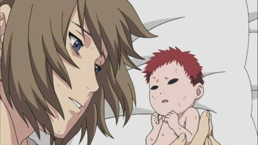Como uma criança, Gaara fez muitas tentativas de se conectar com as pessoas de Sunagakure, os quais o temiam por causa de sua ligação com o Shukaku. Vendo ele apenas como o monstro que ele continha, parecia por um tempo que Yashamaru era a única pessoa que se importava com Gaara.
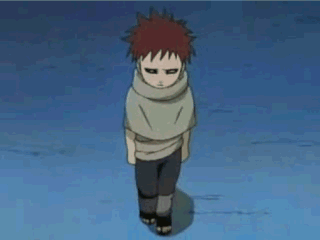Quando Gaara prejudicava os outros sem querer, devido às habilidades subconscientes que lhe foram concedidos pela besta, Yashamaru entendia que Gaara não tinha a intenção de prejudicar ninguém. O Conselho de Sunagakure, no entanto, considerou que os frequentes ataques de Gaara eram uma séria ameaça para a aldeia. Decepcionado com o rumo dos acontecimentos, o pai de Gaara decidiu testar seu filho mandando Yashamaru atacar Gaara tanto física como psicologicamente, em uma tentativa de ver se Gaara pode controlar o Shukaku. Yashamaru revela a Gaara que sua mãe nunca o amou, e tentou assassiná-lo, apenas para ser ferido mortalmente por Gaara antes que o menino percebesse quem ele havia atacado.
Embora Gaara inicialmente tentou considerar o ataque de Yashamaru como uma ordem de seu pai, Yashamaru mentiu para ele e disse que ele tinha aceitado de bom grado a missão de matar Gaara. Ele também revelou que nunca tinha realmente amado Gaara, e lhe disse que matá-lo seria vingar a morte de sua irmã, que o havia chamado de Gaara após a frase "um indivíduo que ama só a si mesmo" (我を愛する修羅, Ware o aisuru shura) como um sinal de seu ódio intenso com relação a Suna, em vez de seu amor por Gaara. Em um último esforço para matar Gaara, Yashamaru detonou uma série de papéis explosivos que cobriam seu corpo, pedindo a seu sobrinho para "morrer por favor". Usando sua areia, Gaara conseguiu sobreviver à explosão, mas ele perdeu a única pessoa que ele tinha pensado que se importava com ele, sem saber a verdade por trás das ações do Yashamaru. Gaara então usou sua areia para gravar o kanji para o amor (愛, ai) no lado esquerdo da testa. Oprimido, Gaara perdeu o controle e se transformou no Shukaku, tumultuando aos redores da aldeia, antes de seu pai conseguir pará-lo usando seu Sakin. 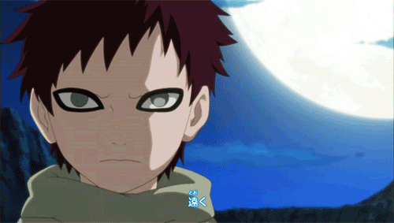 Após a experiência traumática de perder seu tio e ouvir que ninguém nunca o amou, Gaara tornou-se uma pessoa distante e cruel que obsessivamente matava pessoas na tentativa de provar sua própria existência, para obter o reconhecimento da aldeia, deixando de lado todo e qualquer desejo de amizade.
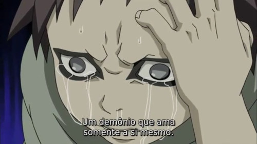A infância de Gaara era um paralelo com a de Naruto Uzumaki de muitas maneiras. Ambos eram insuportavelmente solitários e desejavam serem queridos, amados e reconhecidos como indivíduos, apesar de eles serem jinchūriki — eles eram seres humanos, e não os demônios que tinham sido forçados a conter — e foram levados para estados de depressão e desespero. Enquanto Naruto consequentemente desenvolveu a ideia errada de que brincadeiras e travessuras lhe trariam a atenção que ele ansiava, Gaara chegou à conclusão de que ele podia preservar e confirmar sua própria existência, matando todos e qualquer um que o desafiar, garantindo desta forma uma prova de sua existencialidade.
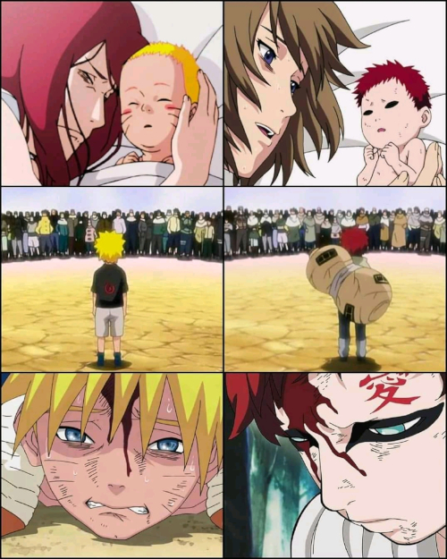Na ausência de reconhecimento externo, Gaara passou a compensá-la, valorizando apenas a si mesmo com a exclusão de todas as outras pessoas. Além disso, enquanto Naruto tinha Iruka Umino e o Time Kakashi para confortá-lo, Gaara nunca se preocupou em fazer vínculos emocionais, nem mesmo com seu pai ou irmãos, como eles também desprezavam e temiam o Shukaku. A pessoa que chegou mais perto de reconhecê-lo era Yashamaru, mas quando Yashamaru foi condenado a traí-lo, Gaara se transformou em um sociopata solitário. Como tal, Gaara não conseguia entender o que motivava as pessoas a lutarem pelos outros, até seu confronto com Naruto durante o Exame Chūnin.
Exames Chūnin
Gaara participou do Exame Chūnin, onde foi rapidamente identificado como um concorrente qualificado. Ele era capaz de passar a primeira fase sem dar indícios que estava trapaceando. Durante a segunda fase, ele demonstrou sua sede de sangue, friamente assasinando o Time Shigure, que Gaara alegou que eles tinham ido pelo caminho errado, e ameaçou matar seus próprios irmãos quando eles tentaram argumentar com ele. Gaara e sua equipe terminou esta fase em 1 hora e 37 minutos, batendo o recorde anterior que era de mais de quatro horas, Gaara não ficou com nenhum grão de poeira em sua roupa, um feito que seria muito difícil mesmo para um ninja experiente.
Nos jogos preliminares, Gaara enfrentou Rock Lee, umas das lutas mais marcantes de todo o anime. Embora não o suficiente num primeiro momento, a velocidade e força formidável de Lee foram reforçadas pelo alívio de peso e, em seguida suficientes para quebrar o Escudo de Areia de Gaara completamente, forçando-o a confiar em sua armadura secundária de areia.
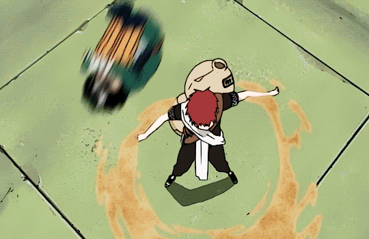Apesar dos melhores esforços de Lee, a cabaça de Gaara se transformou em areia no último minuto protegendo-o do golpe devastador de Lee. A Lotus Reversa de Lee o deixou sem condições de lutar, após usa-la.

Gaara então usou sua areia para esmagar o braço de Lee, enfraquecendo a perna deste e ferindo-o. Gaara tentou matá-lo, mas Might Guy interveio antes que ele pudesse prejudicar Lee ainda mais.
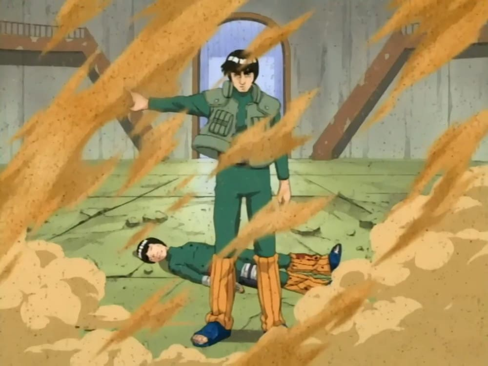Já nas finais, Gaara lutou contra Sasuke Uchiha, entretanto, ele estava desempenhando um papel importante na invasão de Orochimaru contra Konohagakure, liberando o Shukaku no centro da vila. Quando ele começou a enfrentar Sasuke, percebeu que ele tinha um Taijutsu tão alto quanto o de Lee. Não se importando com o que pode acontecer, Gaara tenta se transformar, no entanto, ele foi ferido pelo Chidori de Sasuke, incapacitando-o de se transformar e cumprir seu papel na invasão. Com Gaara sem condições de lutar, ele e seus irmãos tentaram fugir da aldeia.
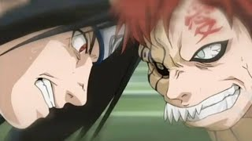Gaara foi perseguido pelos membros do Time Kakashi, juntamente com Shikamaru Nara e Shino Aburame, o que obrigou seus irmãos ficarem para trás em pontos diferentes para lidar com o inimigo. Sasuke alcança Gaara que começa a se transformar no Shukaku. Como sua transformação progrediu, Sasuke tentou usar o Chidori mais duas vezes, mas quando ambos se mostraram ineficazes para deter Gaara, ele ficou exausto. Gaara tentou matar Sasuke, mas foi interrompido por Naruto e Sakura. Isso fez Gaara se lembrar de sua infância, intrigado com as habilidades de Naruto, Gaara prendeu Sakura em uma árvore para forçar Naruto lutar.
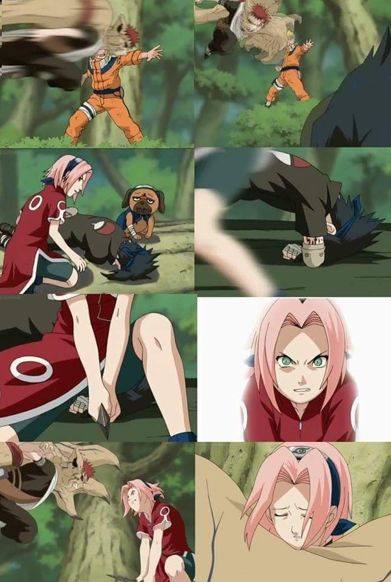Naruto, com medo ficou para lutar contra ele para proteger seus amigos. Embora Gaara parecia ter vantagem Naruto ataca a base mais baixa de sua cauda usando o Mil Anos de Morte que aprendeu com Kakashi Hatake, (só que neste ataque Naruto usa uma kunai com um Papel explosivo ligados a ela, o que reduz a defesa de Gaara tremendamente quando ela explode, dando vantagem à Naruto). Quando derrotado pelos vários Kage Bunshin que Naruto invoca, Gaara irritado libera libera o corpo inteiro do Ichibi no Shukaku. Naruto então invoca Gamabunta antes que Gaara pudesse matá-lo.
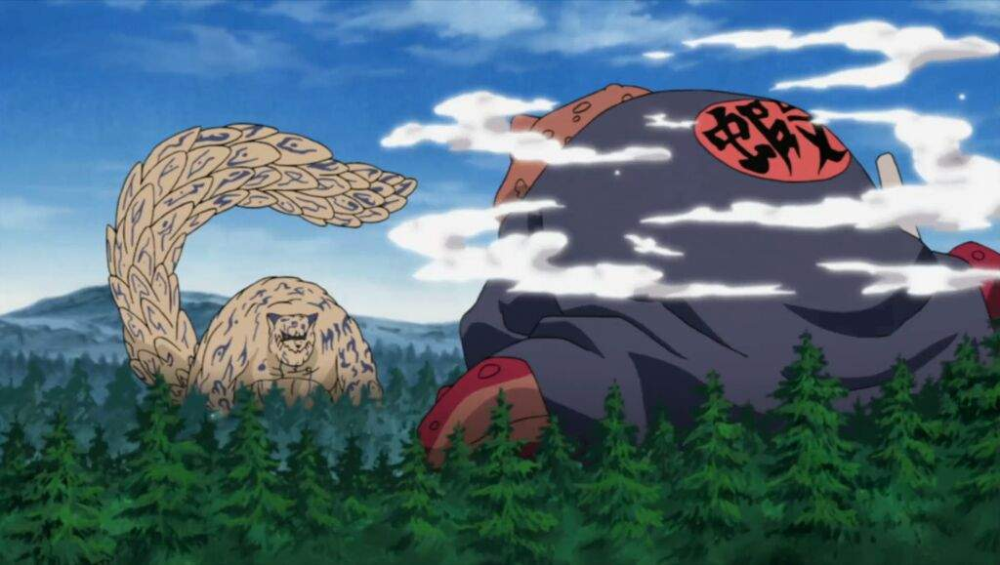Com o último de sua energia, os dois trocaram golpes finais. Naruto acaba vencendo, Gaara ficou intrigado com a devoção eterna de Naruto com seus amigos, fazendo Gaara perceber que a força de Naruto vem do desejo de proteger as pessoas próximas a ele. Como Gaara e seus irmãos fugiram do local, Gaara abertamente se desculpou com Kankurō e Temari, o que os surpreendeu e confundiu. Graças a influência de Naruto, a derrota provou ser um ponto que iria mudar a vida de Gaara.
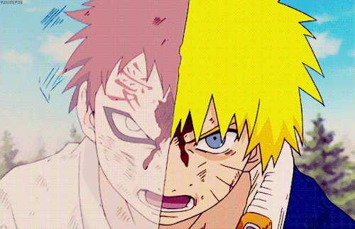A mudança
Depois de sua derrota nas mãos de Naruto, Gaara ficou chocado ao descobrir que Naruto entendia muito bem a dor que ele tinha sofrido ao longo de sua vida. Ele ficou ainda mais surpreso ao saber que Naruto nunca tinha perdido a sua ambição de ser reconhecido como um indivíduo, e, em última instância tinha encontrado companheiros que realmente se importavam com ele. Testemunhando a resolução que Naruto possuía para proteger seus amigos, fizeram com que Gaara questionasse o caminho que ele havia determinado para si mesmo quando era criança. Percebendo que ele tinha escolhido o caminho errado, Gaara decidiu seguir o caminho escolhido por Naruto, a fim de, finalmente, ser visto como um ser humano, e não como a Besta com Cauda dentro dele.
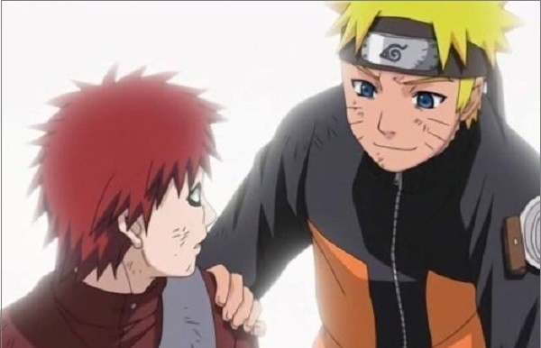Ao longo dos próximos anos, a determinação de Gaara para encontrar a felicidade o levou a confiar em seu próprio poder, em vez do demônio. Gaara finalmente formou uma estreita amizade com Naruto, vendo o ninja de Kohoha como seu primeiro amigo de verdade, e tornou-se muito leal em suas decisões, além de desejar proteger seu companheiro. Gaara também passou a acreditar que seu encontro com Naruto foi o maior evento de sua vida e acredita que até mesmo a vida dolorosa de um jinchūriki valeu a pena pela experiência. Gaara ainda perdoou o Shukaku por sua infância miserável, alegando que era só por causa dessa vida que ele foi capaz de encontrar Naruto.
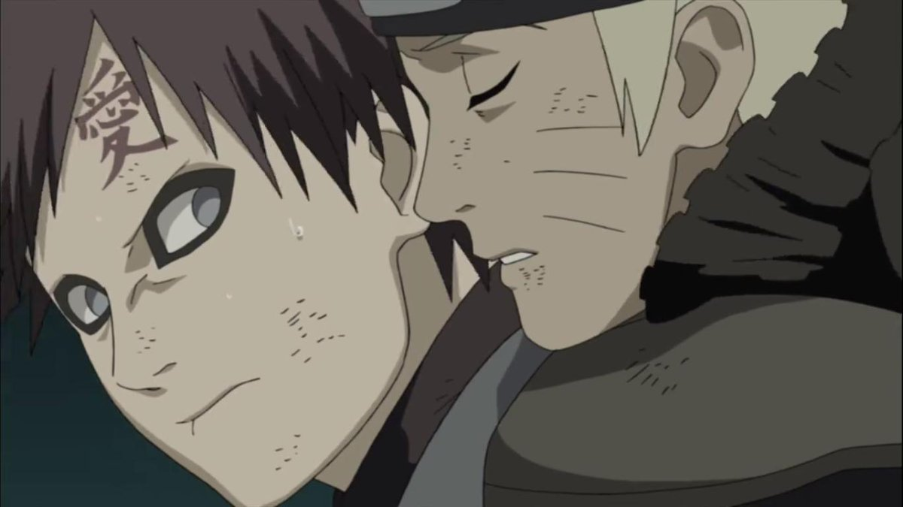No anime, apesar de ser muito mais calmo e tranquilo do que ele costumava ser, Gaara manteve um senso de humor muito mórbido, como mostrado quando Suiko pergunta para Gaara quanto de seu chakra está infundido em sua areia, com Gaara concordando em deixá-lo saber, mas lhe custando a vida.
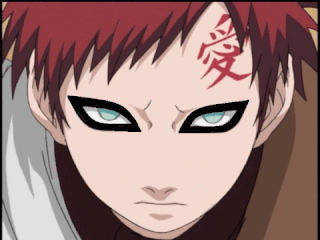Desde que se tornou um dos companheiros de Naruto, Gaara tem de alguma forma herdado sua capacidade de alterar a personalidade das pessoas. No anime, ele convence Matsuri em superar seu medo de armas. Durante a Reunião Kage, ele choca os Kage mais velhos e mais experientes ao perguntar quando eles haviam abandonado a si mesmos, mais tarde, fazendo Ōnoki ficar mais determinado em proteger o Mundo Shinobi. Antes da Aliança Shinobi marchar para a batalha, ele os motiva a deixar suas diferenças de lado, esquecer suas rivalidades do passado e se unirem sob uma mesma bandeira. Ele até consegue fazer Naruto pensar sobre as escolhas que ele tinha feito em relação à Sasuke, afirmando que ele só se preocupa com a vingança. Seu vínculo com Naruto também fez com que ele fosse capaz de jogar de lado qualquer rancor, incluindo o seu ódio para com seu pai, que foi parcialmente responsável pela infância miserável de Gaara. Ele admite ter perdoado as ações de seu pai e chora abertamente depois de saber que sua mãe realmente o amava, e que ela havia prometido protegê-lo para sempre, infundindo sua vontade em sua areia que, como seu pai notou, sempre o protege. Seu amor por sua família também é estendido em seu sonho no Tsukuyomi Infinito, onde Gaara sonha que toda a sua família está unida e feliz, além de Naruto ser um amigo de infância.
Kazekage
Em algum ponto ao longo dos próximos anos, Gaara se torna o Quinto Kazekage de Suna. Sua razão para ocupar essa posição é dupla: para mostrar aos aldeões que ele já não é a arma temível a qual uma vez ele foi, e assim, ao proteger toda a aldeia, ele pode ganhar o mesmo tipo de força que Naruto tem. No anime, Gaara acaba com várias políticas antiquadas, como aquela que proíbe qualquer um que não pode usar ninjutsu ou genjutsu de entrar na Academia.
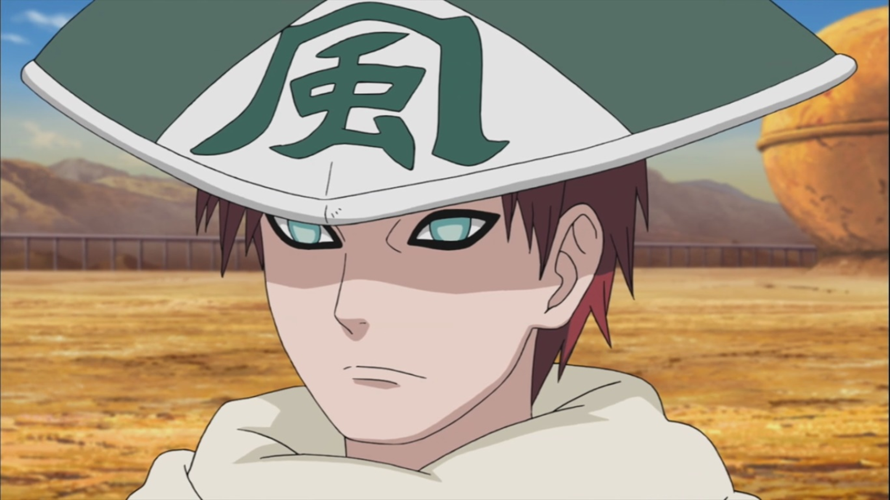Epílogo
Embora ele permaneça implacável contra seus adversários, Gaara é extremamente protetor com relação aos seus aliados e pessoas inocentes, como visto quando ele protege sua aldeia do ataque de Deidara; e seus irmãos, Darui e até mesmo o Raikage contra Sasuke. Ele também entende profundamente aqueles que sofreram com a solidão e o ódio no passado pelo olhar em seus olhos, como Naruto, Kimimaro e até mesmo Sasuke. Como um Kage, Gaara acredita que os ideais das gerações anteriores, que cada aldeia deve se ocupar com seus próprios negócios e resolverem seus próprios problemas, sem ter que pedir a ajuda de outras pessoas, a fim de manter a aparência e honra, é um "pensamento antiquado e ridículo " e que a cooperação entre as aldeias é fundamental para derrotar a Akatsuki. Anos mais tarde, Gaara mostra ter se tornado mais alegre e descontraído, e acaba realizando seu maior sonho: ter uma família e ser verdadeiramente feliz.
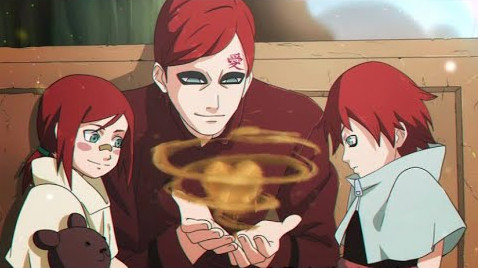